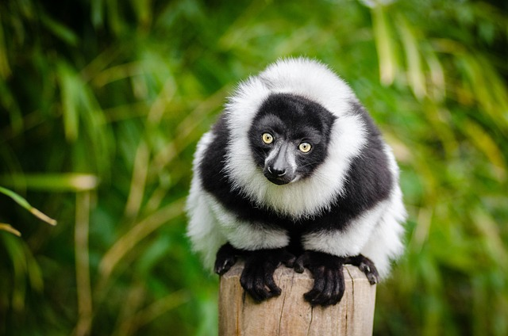
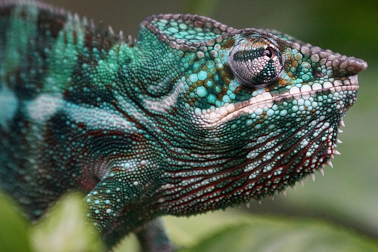
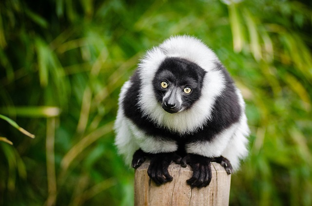
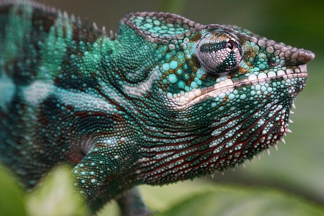

Madagaskar, największa wyspa Afryki, to miejsce jak żadne inne. Oddzielona od kontynentu miliony lat temu, stworzyła unikalny ekosystem, w którym aż 92% ssaków i 95% gadów nie występuje nigdzie indziej na świecie. Wyspa jest rajem dla miłośników przyrody, dzikich krajobrazów i nietuzinkowych przygód. Spotkasz tu m.in. lemury, kameleony i fascynującą fossę, a każda z tych istot jest symbolem tej wyjątkowej wyspy.
 Biuro Podróży Kraken
Biuro Podróży Kraken
 


